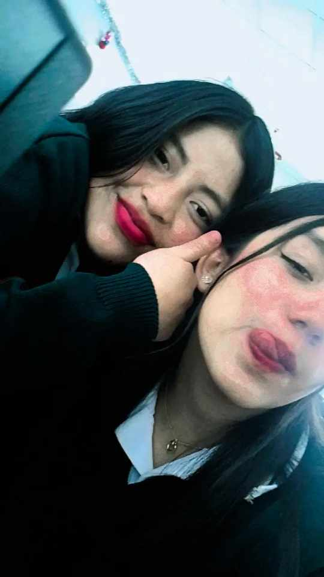

Salir a las practicas preprofesionales fue algo que nunca en la vida me había sucedido, donde recalco que yo y mi amiga íbamos hacer en la empresa de "Florsani" pero decidimos apoyar y aprender un poco más dentro de la institución misma, con la que pasábamos siempre fue con la Lic. Verónica Quiñonez desde las 7:000 hasta las 13:00 donde nosotros salíamos al almuerzo. También fue demasiado vergonzoso ya que tuvimos que compartir en el mismo laboratorio con nuestros compañeros de primero y segundo técnico. Tuve demasiadas experiencias dentro de todo el mes que estuvimos en las practicas ya que pudimos desarrollar nuevos aprendizajes y de igual manera enseñar lo que ya tenía conocimiento. Algo inesperado que sucedió fue que tuve que remplazar la presencia de la Licenciada Verónica Quiñonez por algunas horas donde me di cuenta el día a día de cada docente, donde entendí que, si cansa el pasar la mayoría del día junto a todos nuestros compañeros, soportar bullas también el tener que soportar a estudiantes irrespetuosos donde también el destacar el buen desarrollo de aprendizaje de los algunos estudiantes. Algo chistoso que nos sucedía era que casi la mayoría del tiempo de las primeras semanas pasábamos afuera ya que teníamos que contabilizar los muebles, y casi la mayoría de licenciados nos decía "solo afuera pasan" :D Pude aprender algunas cosas sobre Excel, el ingreso de datos dentro de un inventario, el mejor movimiento de los dedos dentro del teclado donde ahora ya domino un poco mejor, también aprendí algunas combinaciones de teclado que nos facilitan para realizar las cosas un poco más rápido. También recorrí todo el colegio, conocí las oficinas, que es lo que cada uno de ellas contenía.
También debo recalcar que la mejor experiencia fue compartir demasiadas cosas junto a mi amiga, donde juntas recorrimos todo el colegio buscando cada bien inmueble que necesitábamos contabilizar, donde dentro de cada risa, cada estrés, cada enojo reforzamos más la amistad, nunca podíamos estar sin reírnos ya que somos muy graciosas.
Personalmente para mí se me hizo muy corto el mes de las pasantías ya que cuando tuvimos que ingresar fue un poco raro a pesar de que estuvimos en el colegio mismo realizando las pasantías.